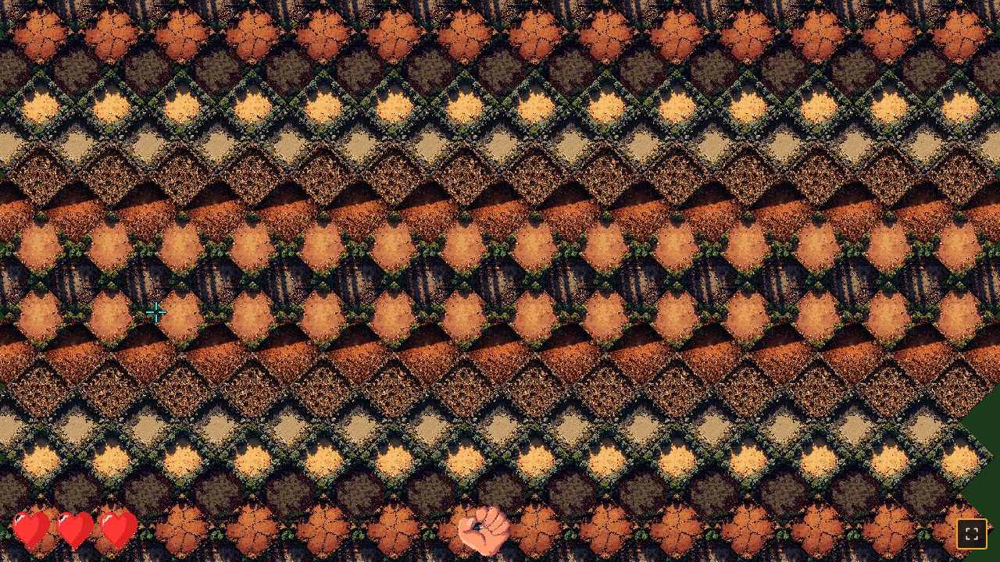

F3 — Capturas de review visual (v2: mano + corazones)
Capturas tomadas por Playwright MCP durante el ciclo de cambios rápidos post-F3.
1280×720. Modo automático: ya están en el repo, servidas en
tests/playwright-screenshots/. Las reviso yo (orchestrator) antes de
declararlas OK; ahora te las paso a vos para validación final.
1) f3-menu.png — Cursor arriba, mano apunta arriba

Observado:
- Mano + boli anclada abajo-centro de la pantalla (x=640, y=688).
- Rotación 0°: el boli apunta hacia arriba (al cursor que está en y=200).
- 3 corazones rojos vivos abajo-izquierda, en línea horizontal, separados 8px.
- Sprite de mano es pixel art real (no placeholder).
- Sin artefactos magenta, esquinas con alpha=0.
2) f3-gameplay.png — Cursor a la derecha, mano rotada ~58°

Observado:
- Mano rotada apuntando al cursor (derecha-arriba).
- El boli "señala" al cursor correctamente.
- Corazones siguen abajo-izquierda, sin cambios.
- El disparo saldría desde la mano hacia el cursor (verificado por logs: fireAtIso(1.10, -2.43) origin=mano).
3) f3v2-03-cursor-left.png — Cursor a la izquierda, mano rotada -57°

Observado:
- Mano rotada apuntando al cursor (izquierda-arriba).
- El boli señala al cursor correctamente.
- Sprite con alpha transparente correcto.
4) f3-boot.png — Integridad en 0 (todos los corazones vacíos)

Observado:
- Los 3 corazones ahora son grises/empty (integrity=0).
- Sprite correcto: outline gris oscuro sobre fondo transparente.
- Posición sigue siendo abajo-izquierda.
- Cambio de estado (lleno → vacío) funciona via
integrity:changed event.
Cambios implementados:
src/ui/hud.js: mano anclada bottom-center con rotación hacia cursor; integridad reemplazada por 3 sprites heart 48×48 bottom-left.src/main.js: pasa heartFullTex / heartEmptyTex al HUD; wirea input.on('tap') → combat.fireAtIso(..., handPos).assets/sprites/heart_full.png + heart_empty.png: generados con minimax + postprocess PIL.assets/sprites/manifest.json: agregadas las 2 entradas.